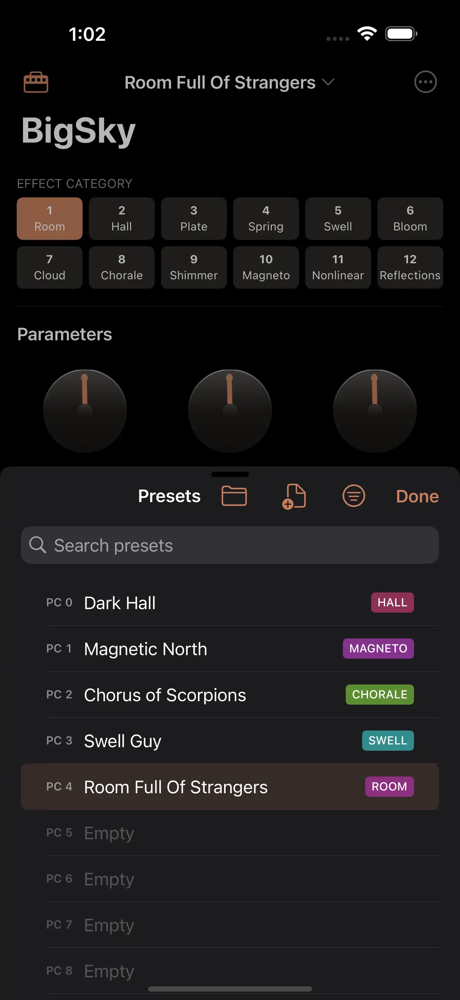
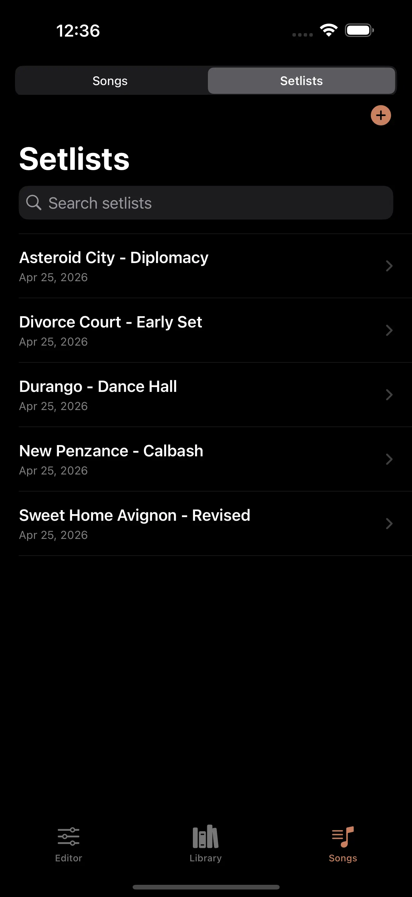
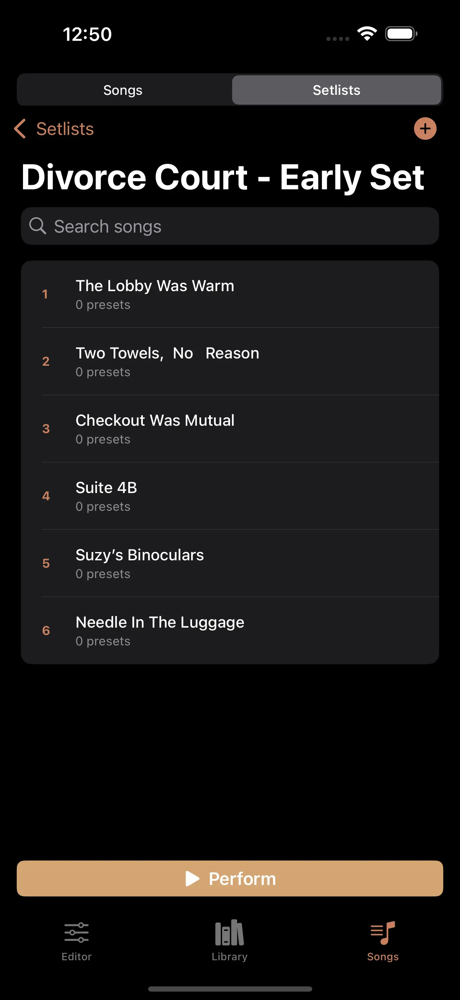
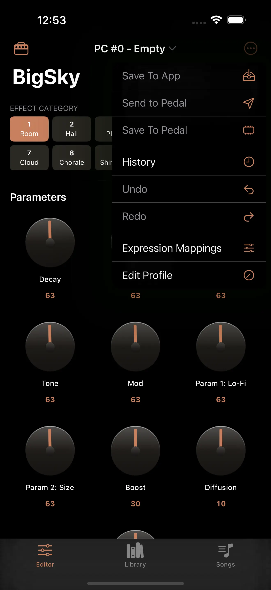
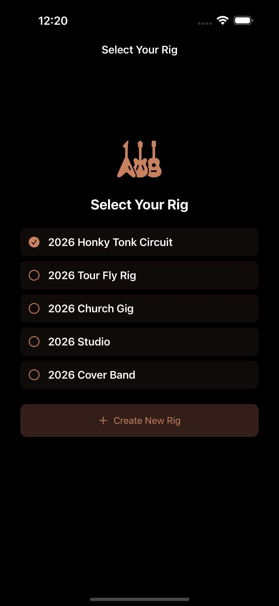
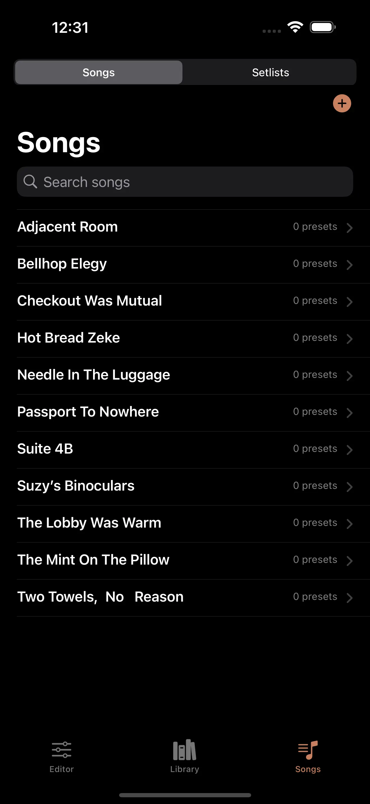

The premier iPhone Bluetooth & Wi-Fi MIDI controller for guitar pedals and synths.
PedalEditor is a native iPhone, iPad, and Mac editor, librarian, and stage controller for MIDI-enabled effects pedals and synthesizers — with a library system that finally makes sense. Replace Nixie, the Walrus app, the Chase Bliss app, the Meris app, and every other single-brand editor with one workspace that organizes your entire rig, recalls full-board scenes by song, and travels with you on stage.
Get PedalEditor on the App Store See What It Does


Visual knobs, sliders, toggles, and algorithm selectors mapped from each pedal's official MIDI implementation. Every CC, every PC, every NRPN.
Rig → Project → Pedal → Bank → Preset. Free-form names. Unlimited slots. Built for how musicians actually think.
Setlists fire a Program Change to every pedal at once. Tap a song, the entire board snaps to the right sound.
Bluetooth LE MIDI and RTP-MIDI over Wi-Fi. Control your rig from the phone in your pocket — no laptop, no cables.
iCloud-backed library shared across iPhone, iPad, and Mac. Edit at home, perform on stage, no exports required.
Export any preset or pack as a .pedalpreset file. Send to bandmates, post online, or import from others with version checking.
Every supported pedal gets a faithful, parameter-complete editor. Switch algorithms and the UI reshapes to match — BigSky's 12 reverb machines, DIG's three delay voicings, LVX's structures. Move a knob and MIDI transmits instantly. Move a knob on the hardware and the app updates back. On pedals that support it, sync is fully bidirectional.

Build an ordered setlist where each song carries a snapshot of your whole board. One tap fires a Program Change to every pedal simultaneously, respecting per-pedal MIDI channels and message timing. Reorder songs at soundcheck by dragging. Switch into full-screen Performance Mode and the chrome disappears — just the song list, the current scene, and a confirmation that every pedal received the change.
Define your physical board once — which pedals, which MIDI channels, how they're wired — and PedalEditor remembers. Run multiple boards? Define multiple rigs and switch between them. The app gates editing on rig confirmation, so you never accidentally fire MIDI at the wrong setup. Projects sit beneath rigs to separate sounds by band, venue, or purpose without duplicating the hardware definition.


The app is the source of truth. Your preset library lives in PedalEditor — on your devices, synced through iCloud. The pedal is a render target. Edit offline, deploy on stage, never lose a sound to a firmware update or a hardware swap.
PedalEditor ships with two layers of coverage: 47 prebuilt profiles — full visual editors with algorithm switching, dual-channel support, and category routing — plus a built-in MIDI Library of 500+ more devices that the Profile Builder pre-fills in one tap. Between the two, almost any MIDI-enabled pedal or synth on the market is one step away from being playable in your rig.
47 fully-built editors across 14 brands. Every parameter, every algorithm, every CC mapped from the manufacturer's official MIDI implementation.
500+ more devices across 100+ brands — legendary synths, drum machines, multi-effects, modelers, and boutique pedals. Pick one in the Profile Builder and the CC list, parameter names, ranges, and categories pre-fill instantly. You finish hardware slots and save method, then ship.
If your pedal is on neither list, the Profile Builder Wizard still works the old-fashioned way — paste the MIDI implementation chart from the manual and PedalEditor walks you through organizing CCs, algorithms, and parameters. Or import a community-built profile as a single file.
| PedalEditor | Stock Editors | |
|---|---|---|
| Multi-brand support | 47 pedals, 13 brands | One brand each |
| Rig & project organization | Yes | Flat preset list |
| Setlist scene recall | Yes — whole board, one tap | No |
| iPhone remote on stage | Wireless, peer-to-peer | No |
| Preset export & sharing | .pedalpreset files + packs | No / limited |
| Custom profiles for new pedals | Profile Builder Wizard | Wait for an update |
| iCloud library sync | iPhone + iPad + Mac | No |
Full editor and controller. Bluetooth LE MIDI and RTP-MIDI direct to the pedal — or remote into a Mac session on stage.
Adaptive layouts for split-view and stacked editing. The big-screen home for sound design and setlist building.
Sidebar + detail layout. Hosts the Multipeer session for iPhone remote control. Connects to your rig via USB or any Core MIDI interface.
Explore the editor with no hardware attached. See how the rig system, setlists, and Performance Mode feel before you connect.
A native iOS, iPadOS, and macOS app that edits and organizes presets for MIDI-enabled guitar effects pedals. Ships with 47 prebuilt profiles across 14 brands — Strymon, Chase Bliss, Walrus Audio, Meris, Eventide, Boss, UAFX, and more — plus a built-in MIDI Library of 500+ more devices that the Profile Builder pre-fills in one tap. Adds setlist-based scene recall, iCloud library sync, and wireless MIDI from iPhone.
Two tiers. 47 prebuilt profiles at launch across 14 brands — full visual editors with algorithm switching, dual-channel support, and category routing. Plus a built-in MIDI Library of 500+ more devices across 100+ brands — pick one in the Profile Builder and the CC list, parameter names, ranges, and categories pre-fill instantly. See the full list in the section above.
Yes. PedalEditor replaces every single-brand editor with one cross-brand workspace. It edits the same parameters those apps edit, while adding rig management, song-by-song setlist scene recall, wireless iPhone control, .pedalpreset file sharing, and iCloud sync that none of the single-brand editors offer.
Three ways. Bluetooth LE MIDI for direct iPhone-to-pedal communication on supported hardware. RTP-MIDI over Wi-Fi for wireless connection across your local network. USB MIDI via any Core MIDI interface for wired use on Mac or USB-C iPad. The app auto-detects connected pedals via MIDI Identity Reply and selects the matching profile.
Yes. PedalEditor is a native app for iPhone, iPad, and Mac with adaptive layouts on each. The library syncs across all three devices through iCloud. iPhone can also act as a wireless remote for a Mac running PedalEditor on stage.
No. No account system, no analytics, no advertising, no third-party SDKs. Local Network permission is requested only to talk to your pedals via MIDI. Optional preset sync uses your personal iCloud account, encrypted end-to-end by Apple.
A snapshot of preset assignments across every pedal on your board, recallable in one tap. Building a setlist lets you fire "Verse 1" to BigSky PC#42, Timeline PC#15, and M1 PC#3 simultaneously, then jump to "Chorus" and change all three. The app respects per-pedal MIDI channels and message timing.
Yes. Any preset can be exported as a .pedalpreset file (JSON with profile metadata). Send it to bandmates, post it online, or import .pedalpreset files from other users. The app performs version checking and warns if the sender used a newer profile.
First check the MIDI Library — 500+ devices across 100+ brands have their CC charts pre-imported, so the Profile Builder fills in parameter names and ranges in one tap. If it isn't covered there either, use the Profile Builder Wizard: paste the MIDI implementation chart from the pedal's manual and the app walks you through organizing CCs into algorithms and parameters. You can also import community-built .pedalprofile files without waiting for an app update.
No accounts. No analytics. No advertising. No third-party SDKs. Your presets sync through your own iCloud account — encrypted end-to-end by Apple — and MIDI never leaves your local network. PedalEditor requests Local Network permission solely to talk to your pedals.
Read the full privacy policy →
PedalEditor is available on the App Store for iPhone and iPad. Questions or feature requests? Reach out on Instagram.
Get PedalEditor on the App Store Follow on Instagram